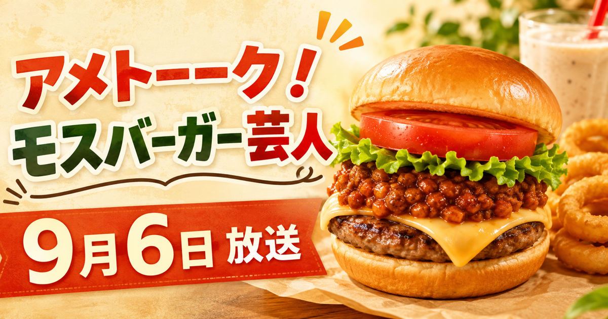

テレビ朝日系・2時間SP
アメトーーク！モスバーガー芸人
紹介メニュー・おすすめ商品まとめ
9月6日の放送は終了しました。放送内容の記録で確認できたメニューを、出演者別にまとめています。商品名と価格はモスバーガー公式サイトで照合しました。

放送で紹介されたメニュー
出演者が推したメニュー
放送内容の記録で確認できた範囲です。商品名と価格はモスバーガー公式サイトで照合しました。価格は税込みで、一部店舗では異なります。
- 山内健司（かまいたち） ― モスチーズバーガー（550円）。袋の底に残ったミートソースがうまい、と語りました。ほかにモスチキン（340円）、チキンナゲット（370円）、オニポテ（340円）、店舗の黒板に産地と生産者名が書かれていること。
- ユースケ（ダイアン） ― フィッシュバーガー（430円）。一度頼んでからこれしか頼んでいない、と語りました。社内スタッフのバーガーランキングで2位だったことも紹介。トマトが苦手なのにモスのトマトは食べられる、クラムチャウダー（380円）が一番うまい、とも。
- あんり（ぼる塾） ― テリヤキチキンバーガー（510円）。チキンとレタスの食感を「デュオ」と表現しました。テリヤキバーガー（490円）が発売当時は売れず、地元の女子高生の口コミで火がついた話も。
- 関太（タイムマシーン3号） ― モスライスバーガー 海鮮かきあげ（塩だれ）（510円）。ご飯で挟むバーガーの衝撃、と語りました。ホットドッグ（460円）も推しています。
- 草薙航基（宮下草薙） ― モスシェイク（S320円／M380円）。ガブ飲み用と味わう用で2個頼む、という飲み方を紹介しました。まぜるシェイクにも言及。
- 熊元プロレス（紅しょうが） ― モス野菜バーガー（500円）をサラダ代わりに食べていると語りました。とびきりシリーズや期間限定メニューにも言及。
- ジャンボたかお（レインボー） ― とびきりシリーズ。肉のうまさとチーズの濃厚さ、下のトマトでさっぱりする点を挙げました。15時から販売のトリプルモスチーズバーガー（850円）にも言及。
スタジオで実食
MC3人が注文したもの
スタジオにモスバーガーの調理場が設置され、出演者がそれぞれ注文しました。
- ケンドーコバヤシ ― モスバーガー（500円）とモスシェイク
- 蛍原徹 ― フィッシュバーガー（430円）とオニオンフライ（340円）
- 渋谷凪咲 ― テリヤキチキンバーガー（510円）
山内が推していたモスチーズバーガーを渋谷が注文しなかったことで、ふたりが小競り合いになる場面がありました。
注意
番組で話題に出たが、現在は買えないもの
放送で名前が挙がっても、2026年9月7日時点でモスバーガー公式サイトの通常メニューに掲載されていない商品です。買えると思って来店すると空振りします。
- とびきりベーコン＆チーズ、とびきりハンバーグサンド「B.L.T.」 ― 現行のとびきりバーガーは「とびきりチーズ 〜北海道チーズ〜」（730円）のみです
- モスの匠味 海老エビフライバーガー、炭焼き国産鰻重バーガー ― 期間・予約商品です
- チキン南蛮バーガー、ホットチキンバーガー ― 番組では復刻を望む声として挙がりました
- フランクフルト ― 2015年に販売を終了しています
- 朝のスタートプレート＜卵とベーコン＆ミートソース＞ ― 現在の朝モスプレートより前の商品として紹介されました
- 月見フォカッチャ ― 番組で実食されましたが、公式サイトでは9月9日からの新商品として案内されています
- まぜるシェイク 醤油キャラメル風〜テリヤキ〜（千葉・茨城限定）、ご褒美シェイク 紅ほっぺ＆ミルク（モスプレミアム店舗） ― 販売地域・店舗が限られます
出演者
モスバーガー芸人として登場
ユースケ（ダイアン）／山内健司（かまいたち）／関太（タイムマシーン3号）／熊元プロレス（紅しょうが）／草薙航基（宮下草薙）／あんり（ぼる塾）／ジャンボたかお（レインボー）
進行はケンドーコバヤシ、渋谷凪咲、蛍原徹。番組告知で確認した時点の情報です。
価格について
掲載価格は現在の公式メニューを参照
価格は2026年9月7日にモスバーガー公式サイトで確認したものです。一部店舗では価格が異なる場合があります。社内スタッフのバーガーランキングは、番組内でフィッシュバーガーが2位として紹介されました。
出典
放送内容とメニュー情報
放送内容は第三者による放送内容記録（TVでた蔵 2026年9月6日放送分）を参照しました。商品名・価格・販売状況は、モスバーガー公式サイトのメニューページで確認しています（2026年9月7日時点）。
お取り寄せ
楽天で買えるモス公式通販商品
以下はモス公式ショップ楽天市場店の商品です。番組で紹介された店舗メニューと同一とは限りません。紹介を確認できた商品には、その旨を追記します。価格・内容・在庫は楽天の商品ページでご確認ください。
公式情報
番組の概要はテレビ朝日、最新のメニューと販売状況はモスバーガー公式サイトをご確認ください。